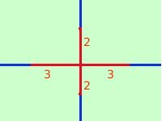
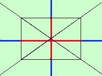
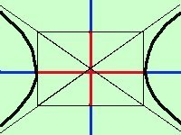
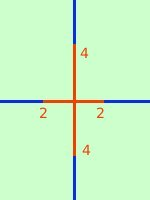
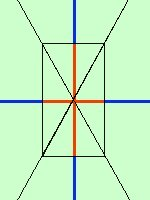
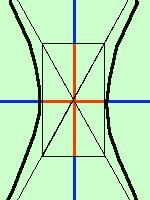

|
Vediamo un paio di esempi: rappresentare graficamente 
 dall'equazione so che a = 3 e b = 2 Partendo dall'origine riporto il segmento 3 a destra ed a sinistra sull'asse delle x Partendo dall'origine riporto il segmento 2 in alto ed in basso sull'asse delle y  Ottengo un rettangolo le cui diagonali sono gli asintoti dell'iperbole; costruisco gli asintoti Ora parto dall'asintoto, arrivo fino al punto di intersezione con l'asse delle x e torno all'asintoto rappresentare graficamente 
dall'equazione so che a = 2 e b = 4 Partendo dall'origine riporto il segmento 2 a destra ed a sinistra sull'asse delle x  Partendo dall'origine riporto il segmento 4 in alto ed in basso sull'asse delle y  Ottengo un rettangolo le cui diagonali sono gli asintoti dell'iperbole; costruisco gli asintoti Ora parto dall'asintoto, arrivo fino al punto di intersezione con l'asse delle x e torno all'asintoto |